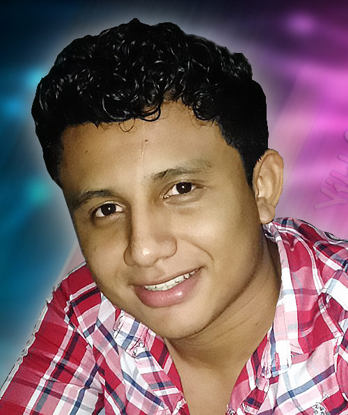

|
CURRICULUM VITAE |
 |
| DATOS PERSONALES |
|
Nombre:
Dirección:
Profesión:
Estado Civil:
Fecha de Nacimiento:
Lugar de Nacimiento:
Nacionalidad:
DUI:
NIT:
Teléfono:
Correo Electrónico:
|
Gerson Osiel Villalobos Amaya
Barrio de Arriba Guatajiagua, Morazán
Desarrollador Web
Soltero
25 de Septiembre de 1993
Guatajiagua, Morazán
Salvadoreño
Nº 04897056-6
Nº 1309-250993-102-0
Nº 7533-5377
yer.villalobos93@gmail.com
|
| FORMACION ACADEMICA |
|
Primaria:
Basica:
Media:
Nivel Superior:
|
De 2000 hasta 2006 en Colegio Cristiano Reverendo Juan Bueno
De 2007 hasta 2009 en Instituto Nacional De Guatajiagua Semipresencial
De 2010 hasta 2012 Bachillerato
De 2017 hasta 2019 Tec.Ingenieria en Sistema de Redes Informatico (UGB)
|
| TITULOS OBTENIDOS |
|
Bachillerato
|
Técnico Opción Contador 2012 |
| OTROS |
ADEL MORAZAN
CARITAS EL SALVADOR
|
Análisis de estado financieros para empresas del departamento de Morazán
Talleres de Formacion en Valores
|
| HABILIDADES |
SERIGRAFIA
DISEÑO GRAFICO
|
Elaboracion de Estampados Textil y articulos promocionales
Manejo de los Sotfware Phothoshop,Corel Draw,Sony Vega,entre otros.
|
| EXPERIENCIA LABORAL |
|
2012
2013
2014
2015 hasta 2016
|
Micro Region, Guatajiagua: Practicas
Agencia Way, San Miguel: Ejecutivo de Venta
Vision Mundial, Guatajiagua: Contador Auxilias
CompuNecogio (Cyber),Guatajiagua: Atencion al Cliente y Mantenimiento de PC
|
| REFERENCIAS PERSONALES |
|
Lic.
Licda.
Licda.
|
Edgar Esteban Yanes Batre
Ermelinda Ventura
Edmy Nataly Benitez Lovo
|